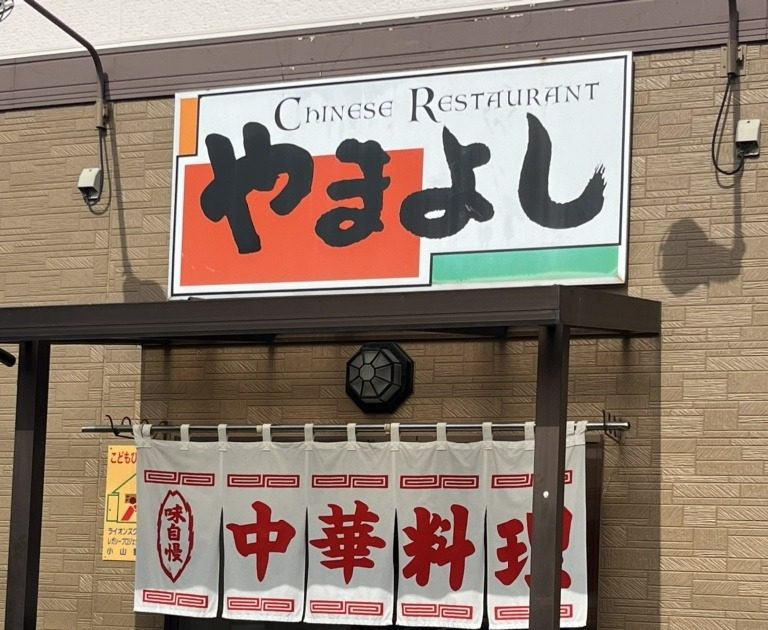
小山市西城南の大衆中華
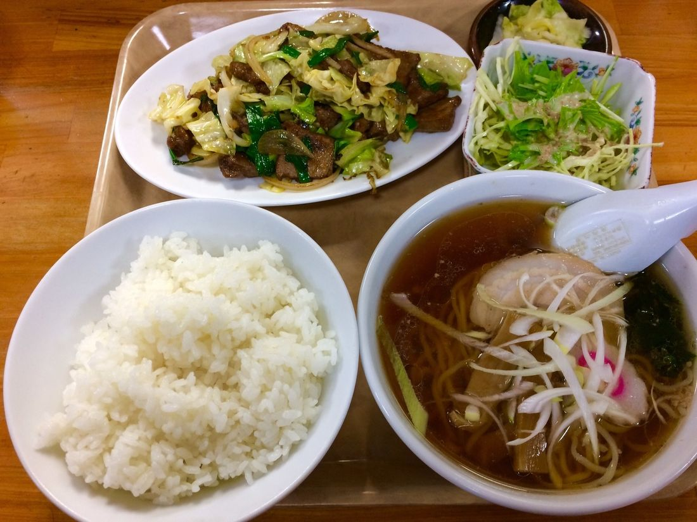
おかずの一品を、八つの中からお選びください。あとに付くものは、八つとも同じです。
しょうゆ味を基本に、しお味・みそ味・辛味をご用意しております。しょうゆとしおは、半らぁめんだけでもお出しします。夏には冷やし中華もございます。
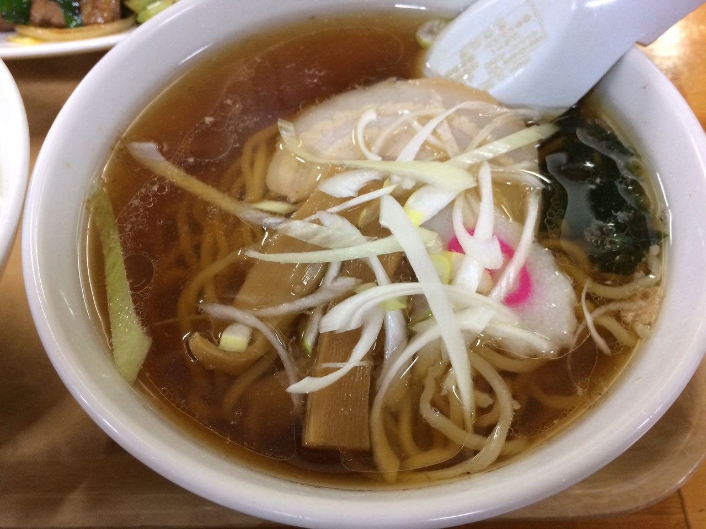
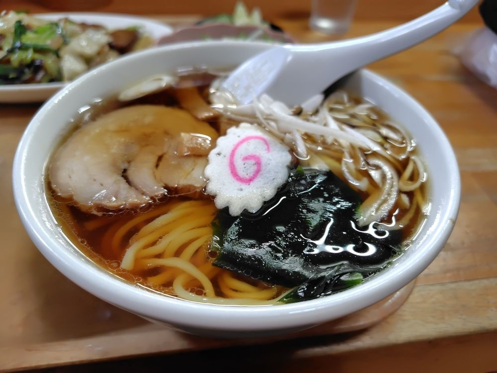
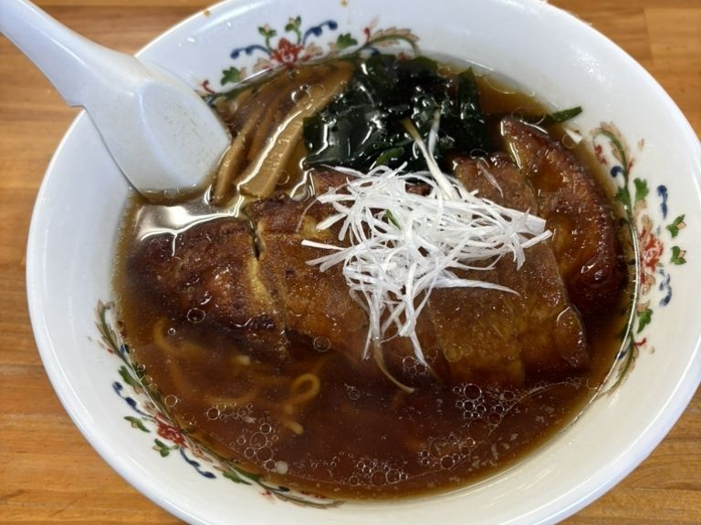
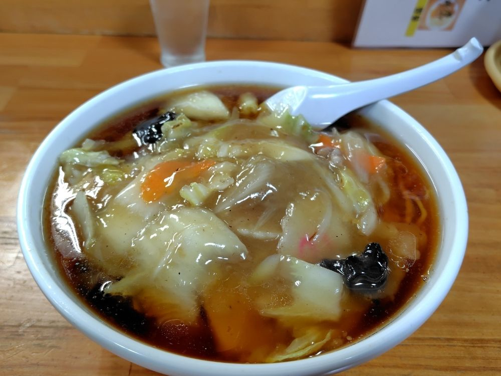
チャーハンはえびとかにもご用意し、半チャーハンもお出しします。丼は中華丼、天津丼、マーボー丼、カツ丼。ごはん類はどれも、スープ・お新香付きです。
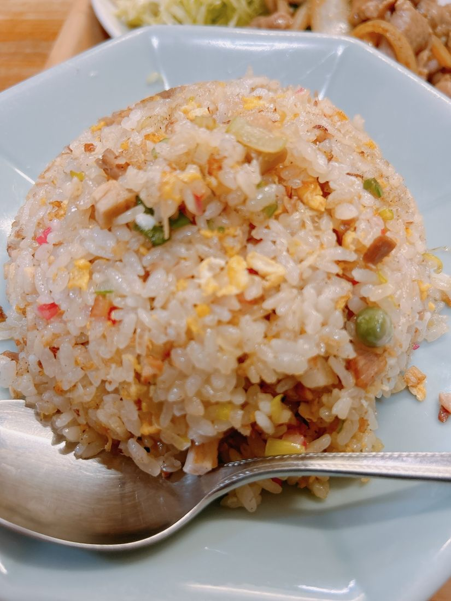
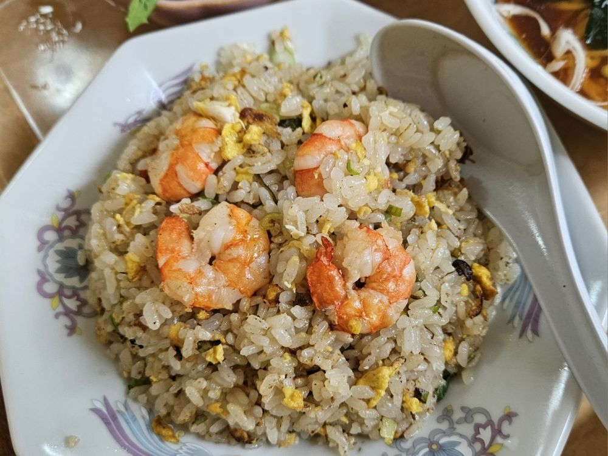
炒め物、ギョーザ、チャーシュウ皿。お待たせせずにお出しできる「すぐ出る一品」は、ザーサイ・メンマ・キムチ・枝豆です。
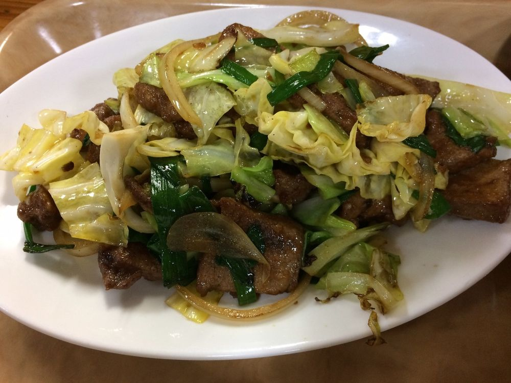
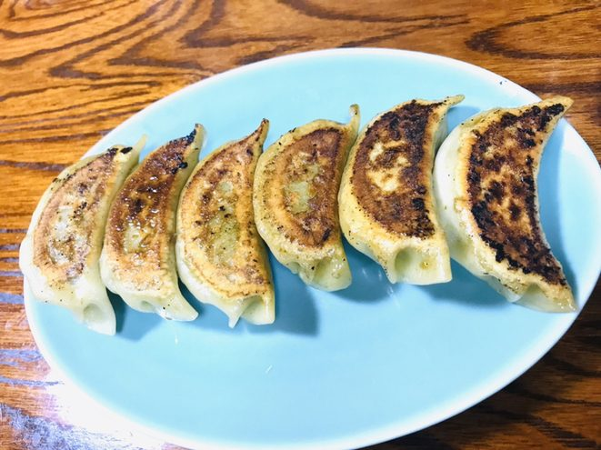
お一人ならカウンターへ、ご家族やお仲間とは小上がりへどうぞ。カウンターの前が厨房ですので、お作りしているところをご覧いただきながらお待ちいただけます。
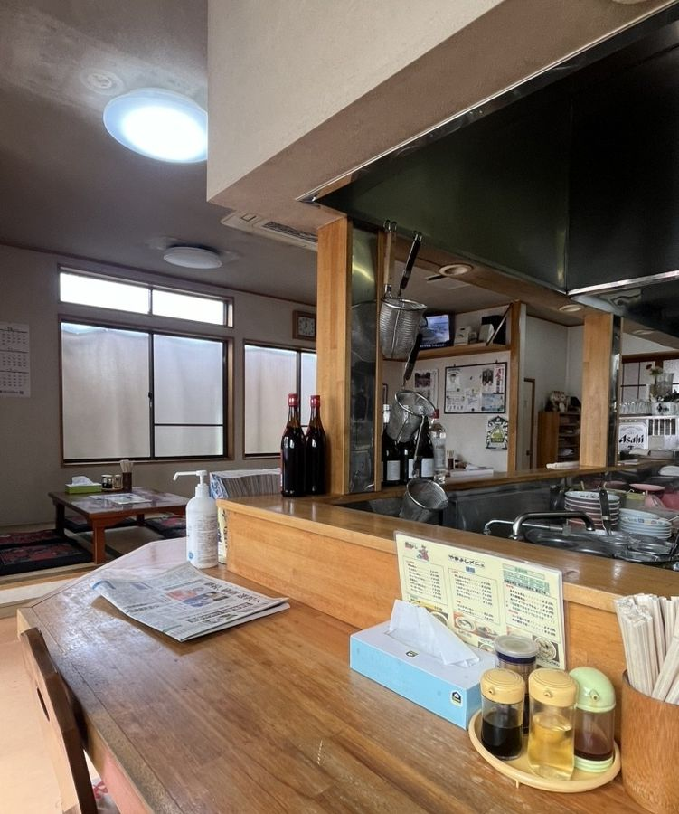
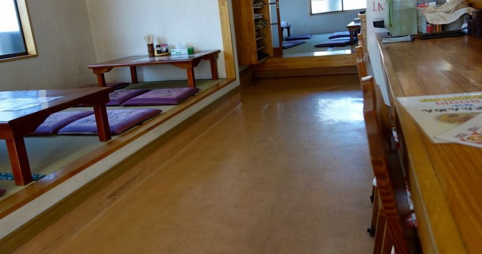
「レバー炒めはレバーの臭みもなくgood！」
食べログ（2026年5月）
「エビチャーハンが香ばしくて、本当に美味しい。醤油ラーメンは昔ながらのラーメンっぽく、旨すぎです。あんかけ餃子も食べなきゃ損」
食べログ（2024年5月）
「店内のいい匂いがたまらんの中華料理店。」
食べログ（2022年12月）
西城南の住宅街の中にございます。道路脇の「大衆中華やまよし」の看板と、紅白の「中華料理」ののれんが目印です。
バス停「西城南１丁目」から徒歩2分、小山駅東口からは約2kmです。
〒323-0820 栃木県小山市西城南1-32-22
今日の一品を決めて、お越しください。